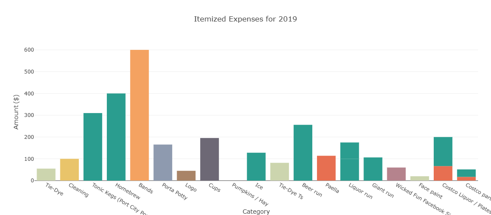
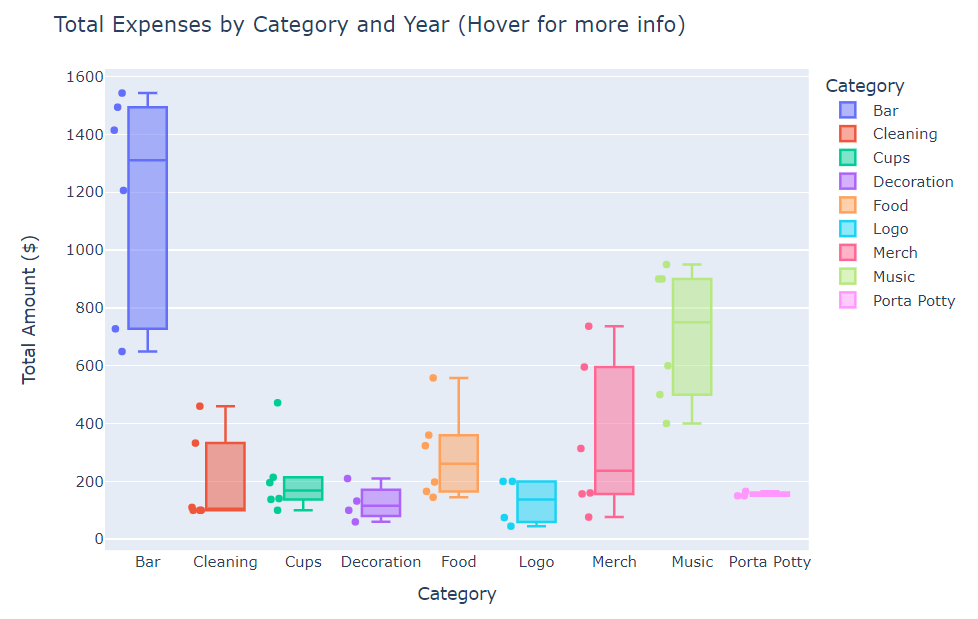
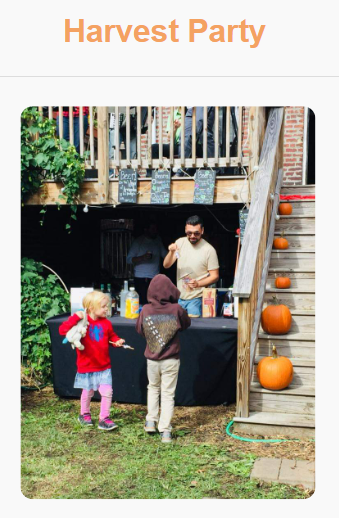

Blended Python, Tableau, and photos to track donations, attendance, and impact. A data story about giving, gathering, and transparency.
Project Links
This project is a love letter to friends across the years. It also served practical goals, helping the planning committee visualize costs, justify donation requests, and prepare for the 2024 event. The results were mixed: we cut expenses, but donations still fell short of covering costs or contributing to the Capital Area Food Bank. Full of personal touches—photo reels, vintage logos, COVID gags—it remains one of the most heartfelt community projects I’ve ever been part of.
Project Overview
The Harvest Party is an annual fundraiser supporting the Capital Area Food Bank, blending community, live music, and local food. I used this event as an opportunity to combine personal connection with professional skills, turning historical financial data into meaningful, interactive insights for both donors and planners.
The process began with Python-based exploratory data analysis (EDA), where I cleaned and organized multi-year financial data using pandas, matplotlib, seaborn, and Plotly. This foundational step uncovered trends in expenditures, donations, and attendance, setting the stage for downstream analysis.
I then built a mobile-responsive website using JavaScript, styled with Sass and Bootstrap to host dynamic Plotly.js charts. Designed for transparency, the site helps donors and organizers visualize where funds go and how the event performs year to year. Custom touches, like animated masks to reflect the 2020 pandemic, help keep the experience engaging and on-brand.
Finally, I developed a set of interactive Tableau dashboards that deliver explanatory analysis. These dashboards highlight key metrics such as donation trends, spending breakdowns, and cost per attendee, helping stakeholders quickly understand the event’s financial health and identify opportunities to improve impact and efficiency.
By combining technical tools and visual storytelling, this project highlights my ability to not only analyze data but also present it in ways that engage both technical and non-technical audiences.

Alternate, exhaustively comprehensive desktop version here
Gallery
Web pie chart: Categorized expenses overlaid on a pumpkin pie—festive and thematic, serving up a visual slice of party spending.
Web bar chart: Cumulative expenses by category, showing that Bar and Music account for the largest shares.
 Web bar chart: Itemized expenses for 2019, a typical year, providing a detailed breakdown of spending.
Web Sunburst Plot: Colorful. Visually striking. Unwieldy and consequently uninformative, but pretty. Made because I'll never get the chance to make one ever again.
 Tableau dashboard: Visualizing expenses, donations, and net
annual gain or loss. Early years show net losses—especially in
2021, post-COVID—followed by a return to positive net
donations.
Tableau dashboard: Visualizing expenses, donations, and net
annual gain or loss. Early years show net losses—especially in
2021, post-COVID—followed by a return to positive net
donations.
 Tableau dashboard: Facebook RSVPs and cost per person. Facebook’s
declining relevance contributes to the apparent drop in attendance
post-COVID. This metric is failing, yet it still doesn’t explain
the tripling of expenses per attendee.
Tableau dashboard: Facebook RSVPs and cost per person. Facebook’s
declining relevance contributes to the apparent drop in attendance
post-COVID. This metric is failing, yet it still doesn’t explain
the tripling of expenses per attendee.
 Tableau dashboard: Annual expenses by year, with bar charts
highlighting steadily rising costs.
Tableau dashboard: Annual expenses by year, with bar charts
highlighting steadily rising costs.
 Google Colab EDA: Box and whisker plot showing the distribution of expenses by category, with Bar and Music consistently the highest.



Images courtesy of the Harvest Party Planning Committee
References
Dataset provided by the Harvest Party Planning Committee.
Heartfelt gratitude to all Harvest Party attendees and the dedicated volunteers who brought this event to life and made it so special year after year.